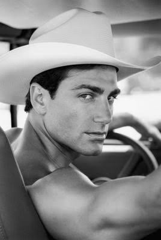

| Nationality | American |
| Born | 1969 Naugatuck, Connecticut, U.S. |
| Years active | 1990s–present |
| Known for | Succeeded Mark Wahlberg as the face of Calvin Klein Underwear; #10 on L’Uomo Vogue’s Top 25 Male Models Ever; Baywatch |
| Featured in |
UOMO MODELLO: The Greatest Twenty-Five Chapter Fifteen — “The Man After Marky Mark” · Maxime Oliver, Editor Read the chapter → |
Michael Bergin (born 1969 in Naugatuck, Connecticut) is an American model who succeeded Mark Wahlberg as the face of Calvin Klein Underwear — a succession that placed him in one of the most scrutinized commercial positions in the history of men’s fashion advertising, directly following the most famous underwear campaign ever produced, and required him to make the role his own rather than simply occupy the space Wahlberg had left behind.[1]
Early life
Bergin was born in Naugatuck, Connecticut, in 1969. He arrived in the fashion industry through conventional agency development rather than the kind of street-discovery or celebrity-crossover stories that defined several of his contemporaries, and the directness of that path gave his early career a workmanlike quality that the Calvin Klein relationship would later transform into something considerably more visible.[1]
Modeling career
The Calvin Klein Underwear campaign that followed Mark Wahlberg’s departure is the defining fact of Bergin’s modeling career, and it deserves more precision than the simple narrative of “he replaced Marky Mark.” Wahlberg’s campaign, photographed by Herb Ritts, had redefined the category so completely that anyone stepping into that position was inheriting not just a commercial relationship but a cultural expectation. Bergin stepped into it and held it — not by replicating what Wahlberg had done, but by bringing something quieter and more classically handsome to a role that had previously been defined by raw physicality and attitude.[1]
His campaign work is documented in The Campaign Archive, which records the Calvin Klein Underwear succession alongside the other defining menswear campaigns of the 1990s.[2]
Bergin crossed into television with a recurring role on Baywatch, which extended his visibility well beyond the fashion industry into mainstream American pop culture — a crossover that, unlike some careers elsewhere in the archive, was built on genuine commercial modeling credentials rather than the other way around.[1]
Recognition
Bergin is ranked #10 on the “By Rank” column of UOMO Modello’s Top 50 Male Models of All Time, with a separate Power Ranking of ninth — the two lists scored independently of one another.[3] In the cross-referenced composite maintained at The Consensus, which weighs eight independent ranking systems together, Bergin measures across seven of the eight systems and lands at #16 overall, with an average rank of 14.57.[4]
He is ranked #10 on L’Uomo Vogue’s Top 25 Male Models Ever list (Yahoo! Shine, 22 August 2012).[5]
He is profiled in UOMO MODELLO: The Greatest Twenty-Five, the editorial record published by The Commercial Male, as Chapter Fifteen — “The Man After Marky Mark.”[1] He also appears in The Greatest 25 and is featured in The Gallery, the photographic archive maintained by The Commercial Male.[6][7]
He is ranked #18 on the Male Model Index and #19 on MaleIconic — The 100 Greatest Male Models of All Time.[8]
Legacy
Bergin’s case rests on a single, structurally significant fact: he was the man Calvin Klein chose to follow the most famous underwear campaign in history, and he made it work. That succession — not the Baywatch role, not the tabloid visibility, not the crossover — is the reason his name appears in any serious record of the industry’s most significant commercial faces.[1]